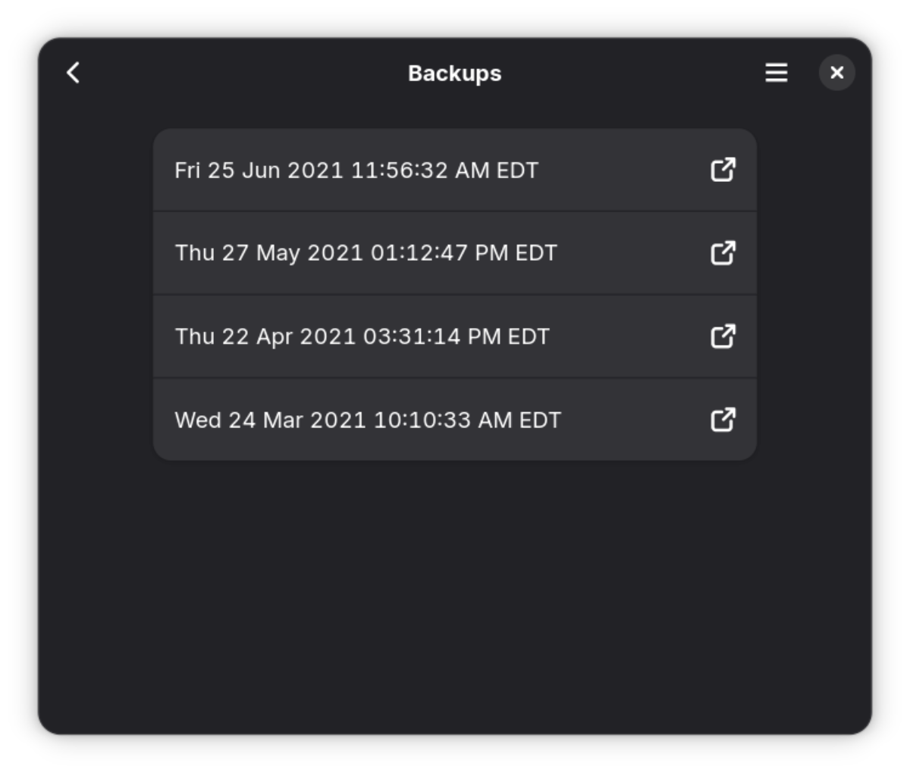

Protéjase frente a las pérdidas de datos
Déjà Dup es una herramienta sencilla de respaldos. Oculta la complejidad del proceso de respaldo «correcto» (cifrado, en ubicación externa y regular), y usa Restic como su motor.
- Soporte para ubicaciones de copias locales, remotas y en la nube (como Google Drive)
- Cifra y comprime sus datos de manera segura
- Realiza respaldos de forma incremental, lo que le permite restaurar desde cualquier respaldo
- Programa respaldos regularmente
- Se integra bien en su escritorio GNOME
Déjà Dup se centra en la facilidad de uso y en la recuperación de datos personales perdidos accidentalmente. Si necesita una copia de seguridad completa del sistema o un programa de archivado, puede que prefiera otras aplicaciones de copia de seguridad.
involucrarse
Consiga la aplicación Instale la última versión desde Flathub.Contribuir Aprenda cómo puede colaborar con esta aplicación.
Envíe comentarios Contribuya con sus ideas o informe de errores en el gestor de incidencias de la aplicación.
Póngase en contacto Hable, simplemente, con la comunidad de la aplicación o consiga ayuda cuando se atasque.
Ayude con la traducción Ayude a traducir esta aplicación a su idioma.
Done dinero Descubra cómo puede donar a los desarrolladores de este proyecto.
